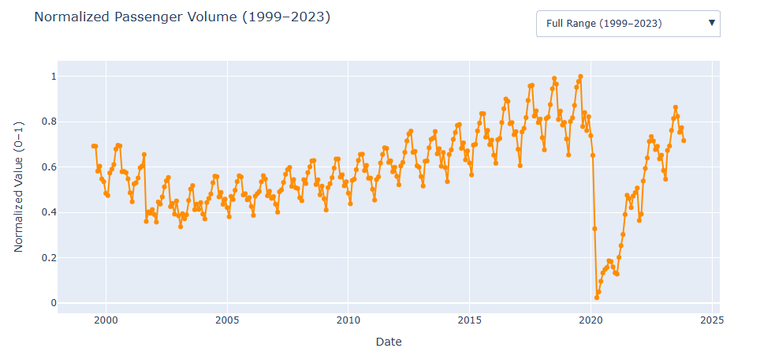

Other Visualizations
Other interactive charts are included in our Jupyter Notebook. Please download and view sfo_visualizations.ipynb for full interactivity or view static images below:

From 1999 to 2023, SFO’s airline passenger volume generally trends upward, showing long-term growth in air travel throughout the years. Each year reveals a seasonal pattern where passenger counts peak in the summer months and dip to the lowest points in the winter for that year. This might be caused by vacation and holiday travel cycles.
A sharp and well-documented drop occurs in 2001, directly following the September 11 attacks, which significantly impacted air travel nationwide. While 2008–2010 shows a slight decline in the yearly growth rate of air travel during the global financial crisis, the change is relatively modest and less pronounced.
The biggest disruption we noticed appears to start from late 2019 and 2020, when airline passenger volume plummeted due to the start of the COVID-19 pandemic. This sudden decline prompted us to do a more in-depth focused analysis of the pandemic years.
By comparing COVID-19 hospitalization and testing trends with SFO passenger counts, we found clear inverse relationships—travel fell during periods where positive cases and hospitalizations spiked. However, as the vaccine became widely available in late 2020 and early 2021, passenger counts began to recover quickly. As of 2023, SFO’s passenger traffic has not yet fully returned to its pre-pandemic peak, highlighting the ongoing effects of the pandemic on the air travel industry.

This visualization is a Sankey diagram that illustrates the flow of air traffic from specific airlines, segmented by terminals at San Francisco International Airport (SFO), to global regions. Each terminal has a unique traffic profile: Terminal 3 is dominated by United Airlines and focuses mostly on domestic U.S. routes, while Terminal 1 hosts a broader mix of domestic carriers serving Canada, Mexico, and the U.S.
Terminal 2 shows a hybrid pattern, with both domestic airlines and international carriers like Air Canada and Lufthansa connecting to Europe and Asia. The International Terminal displays the most complex network, with dozens of airlines connecting SFO to nearly every global region—especially Asia and Europe. In contrast, the "Other" category shows smaller operators (like Ameriflight and Sports Hawk) that primarily serve domestic routes.
This Sankey diagram breaks down how the operations of SFO are structured and how terminals are specialized in flying certain routes while highlighting where the largest concentration of flights are headed to.
